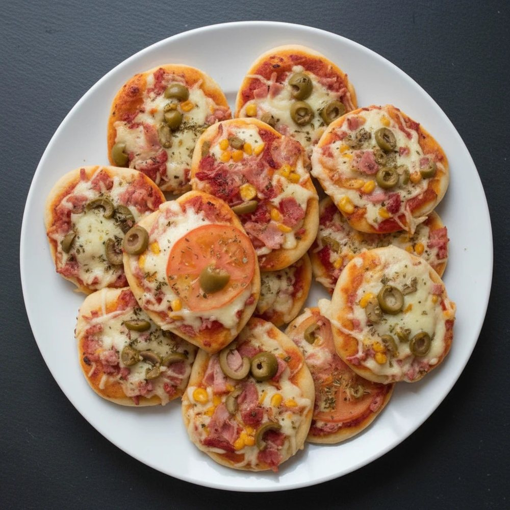

Salgados · Massas fritas/assadas
Mini pizzas caseiras

Ingredientes
- Massa: 500 g de farinha de trigo
- 325 ml de água
- 3 g de fermento biológico seco
- 10 g de sal
- 10 g de azeite
- Cobertura: molho de tomate, queijo e frango ou carne moída já cozidos
Modo de preparo
- Misture os ingredientes da massa e sove até obter uma massa lisa e elástica.
- Deixe crescer na geladeira por 18–24 horas.
- Divida em 6 bolinhas e deixe descansar por 1–2 horas.
- Abra os discos e pré-asse a 230 °C por aproximadamente 4–6 minutos.
- Deixe esfriar, coloque molho de tomate, queijo e frango ou carne moída já cozidos.
- Congele individualmente.
Observação
No dia: forno a 200 °C por aproximadamente 10–15 minutos, até aquecer completamente e dourar.